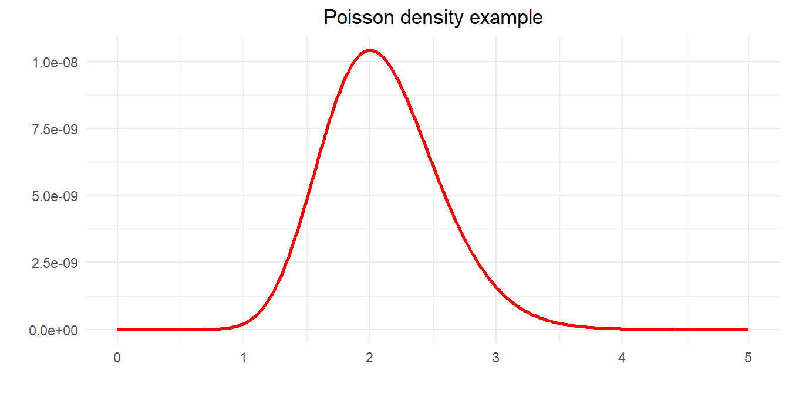

5 Carter-Kohn
5.1 Using the Kalman Filter
Establish the usefulness of the Kalman Filter (and not just for state estimation). Refresh idea of maximum likelihood estimation in the context of state space models.
- Introduce smoothing
- Develop Gibbs sampling by the Carter-Kohn method
- All of these use the Kalman Filter to develop conceptually different tools
Follow Kim and Nelson (1999); also see Harvey (1989), Hamilton (1994), Durbin and Koopman (2001)
5.2 Maximum likelihood
5.2.1 Classical Maximum Likelihood Estimation
The principle of maximum likelihood is that the parameters should be chosen so that the probability of observing a given sample is maximized
For time series models the joint density of \(\psi_T = \{y_T, y_{T-1},\ldots ,y_1 \}\) and parameters \(\theta\) in conditional form is \[ p(\psi_T|\theta) = \prod\nolimits_{t=1}^T p (y_t|\psi_{t-1},\theta) \] emphasizing the serial dependence of observations
Interpret this as the likelihood for a particular sample
Assuming (conditional) normality, the likelihood of any particular \(n\)-vector of observations is
\[ p(y_t) = (2\pi)^{-\frac{n}{2}}|var(y_t)|^{-\frac{1}{2}}e^{\left\{ -\frac{1}{2}(y_t-\mu )' var(y_t)^{-1}(y_t-\mu)\right\} } \]
- Depends on the observations and the parameters
- It can be multivariate and for any underlying density
- A maximum likelihood (ML) estimate of \(\theta\) maximizes the likelihood of the observed sample
5.2.2 Poisson example
- Greene (1997) constructs a Poisson distribution example where the density for each observation is \[ p(y_i,\ \theta )=\frac{e^{-\theta }\theta ^{y_i}}{y_i!} \] for \(y>0\), zero otherwise and property \(E[Y]=var(Y)=\theta\)
Count variables often modeled as a random Poisson process: numbers of road traffic accidents, sales, telephone calls, electron emissions. Greene’s example is to find the most likely value of \(\theta\) given observations. \[ 5,\ 0,\ 1,\ 1,\ 0,\ 3,\ 2,\ 3,\ 4,\ 1 \] For independent observations the joint density is \[ p(y,\ \theta) =\prod_{i=1}^{10}p(y_i,\ \theta ) = \frac{e^{-10\theta}\theta^{\sum_i y_i}}{\prod_i (y_i!)} = \frac{e^{-10\theta}\theta^{20}}{207,360} \] We can plot this function to see if it has a maximum
- We can also find this by calculus
- The log function is monotonic so convenient to take logs
\[ \ln L(\theta) = -10\theta + 20\ln\theta -\ln(207,360) \]
First order conditions are \[ \frac{\partial \ln L(\theta )}{\partial\theta} = -10+\frac{20}{\theta} \Rightarrow \theta =\frac{20}{10}=2 \] Check for maximum \[ \frac{\partial^2\ln L(\theta )}{\partial\theta^2} = -\frac{20}{\theta^2} < 0 \]
5.2.3 ML and regression
Linear regression problem is \[ L(y) = \frac{1}{(2\pi \sigma^2)^{n/2}}\exp \left[ -\frac{1}{2\sigma^2}(y-X\beta)'(y-X\beta)\right] \] Log-likelihood \[ \ln L = -\frac{n}{2}\ln (2\pi)-\frac{n}{2}\ln (\sigma^2) - \frac{1}{2\sigma^2}(y-X\beta)'(y-X\beta) \] Find the extremum by calculus; yields likelihood equations \[ \begin{align} \frac{\partial \ln L}{\partial \beta} & = - \frac{2}{2\sigma^2} (X'y-X'X\beta) = 0 \\ & \Rightarrow \hat{\beta}_{ml} = (X'X)^{-1}X'y \end{align} \] and \[ \begin{align} \frac{\partial \ln L}{\partial \sigma^2} &= - \frac{n}{2\sigma^2} + \frac{1}{2\sigma^4} (y - X\beta)'(y - X\beta) = 0 \\ & \Rightarrow -n + \sigma^{-2} (\epsilon'\epsilon) = 0 \\ & \Rightarrow \hat{\sigma}_{ml}^2 = \frac{\hat{\epsilon}'\hat{\epsilon}}{n} \end{align} \] ML estimate of \(\sigma^2\) divided by \(n\) (not \(n-k\)) so biased in small samples but not asymptotically
5.3 Kalman filter tricks
For some initial condition – say \(\beta_0 \sim N(\mu_0,P_0))\) – the conditional log-likelihood for sample \(1\) to \(T\) \[ \begin{align} \log L(\psi_t|\theta) &= \sum\nolimits_{t=1}^T\log p(y_t|\psi_{t-1},\theta) \\ &\propto -\sum\nolimits_{t=1}^T\left( \log \left\vert f_{t|t-1}\right\vert +\eta_{t|t-1}' f_{t|t-1}^{-1}\eta_{t|t-1} |\ \theta \right) \end{align} \] Note we could obtain \(\eta_{t|t-1}\) and \(f_{t|t-1}\) from the Kalman filter, i.e. \[ f_{t|t-1} = (H_tP_{t|t-1}H_t' + Q) = \Sigma_{\eta\eta} \] This is the prediction error decomposition of the log-likelihood. For a classical approach we estimate \(\theta\) by numerically maximizing \(\log L(\psi_T|\theta)\).This gives a point estimate for the value of \(\theta\) and we typically apply classical inference using the estimated standard errors. Note to do this we need to evaluate the best estimate of the state as well as maximize the likelihood: the Kalman Filter is a key ingredient in both.
Maximisation
A suitable numerical maximization routine will (in principle) maximize the likelihood straightforwardly. Often use Chris Sims’ csminwel in Matlab or R as well-suited to this type of problem.
Can show (via Cramer-Rao) that \[ \widehat{\theta}\sim N\left(\theta, -\frac{\partial^2 \log L(\psi_T|\theta)}{\partial\theta\partial\theta'} \right) \]
5.4 Full sample estimates of \(\beta_t\)
5.4.1 The regression lemma again
You may recall that for any \[ \begin{bmatrix} z \\ y \\ \varepsilon \end{bmatrix} \sim N\left(\begin{bmatrix} \mu_z \\ \mu_y \\ 0 \end{bmatrix}, \begin{bmatrix} \Sigma_{zz} & \Sigma_{zy} & \Sigma_{z\varepsilon } \\ \Sigma_{yz} & \Sigma_{yy} & 0 \\ \Sigma_{\varepsilon z} & 0 & \Sigma_{\varepsilon\varepsilon} \end{bmatrix}\right) \] then it must be that \[ \begin{align} E[z|y,\varepsilon] &= \mu_z + \Sigma_{zy}\Sigma_{yy}^{-1}(y-\mu_y) + \Sigma_{z\varepsilon}\Sigma_{\varepsilon\varepsilon}^{-1}\varepsilon \\ &= E[z|y] + \Sigma_{z\varepsilon}\Sigma_{\varepsilon\varepsilon }^{-1}\varepsilon \end{align} \] We use this to derive a recursive update to smooth our estimates. We will also derive an appropriate conditional expectation which we can use in Gibbs sampling.
5.5 Smoothing
The Kalman filter estimates \(\beta_t\) recursively: it only uses information available up until time \(t\). This means that the estimate of \(\beta_{T|T}\) uses all available information, but any previous estimate doesn’t. Indeed there must be some values of \(\eta_{i|t-1}\) \[ \beta_{t|T} = E(\beta_t | \psi_{t-1}, \eta_{t|t-1}, \eta_{t+1|t-1},...,\eta_{T|t-1}) \] where the ‘news’ is relative to period \(t\)
We could update \(\beta_{t|t-1}\) using the (uncorrelated) future innovations \[ \beta_{t|T}=\beta_{t|t}+\sum_{j=t}^T\Sigma_{\beta_t\eta_j}\Sigma_{\eta_j\eta_j}^{-1}\eta_{j|t-1} \] and recalling \(\beta_{t|t}=E(\beta_t|\psi_{t-1},\eta_{t|t-1})\).
This is a fixed interval smoother; often used for full sample estimates of \(\beta_t\). Remember we already have an estimate of \(\beta_{T|T}\) from the Kalman filter so smoothers work backwards; we sketch a derivation here.
In the last but one period we have a different prediction error \[ \varsigma_{T|T-1} = \beta_{T|T} - F\beta_{T-1|T-1} - \mu \] which is the error in predicting \(\beta_T\) using \(\psi_{T-1}\).
An ‘update’ has to be of the form \[ \beta_{T-1|T}=\beta_{T-1|T-1} + \Sigma_{\beta\varsigma}\Sigma_{\varsigma\varsigma}^{-1}\varsigma_{T|T-1} \] where \(\Sigma_{\varsigma\varsigma} = var\left[ \varsigma_T|\psi_{T-1}\right]\) and \(\Sigma_{\beta \varsigma}=cov\left[\beta_{T-1},\varsigma_T|\psi_{T-1}\right]\).
These are \[ \begin{align} \Sigma_{\varsigma\varsigma} &= var(\beta_T - F\beta_{T-1|T-1}-\mu) \\ &= var\left(F(\beta_{T-1}-\beta_{T-1|T-1}) + e_t \right) \\ &= F P_{T-1|T-1}F' + Q \end{align} \] and \[ \begin{align} \Sigma_{\beta\varsigma} &= E\left[ (\beta_{T-1}-\beta_{T-1|T-1}) \left( \beta_T - F\beta_{T-1|T-1}-\mu \right)' \right] \\ &= E\left[ (\beta_{T-1}-\beta_{T-1|T-1}) (\beta_T-\beta_{T-1|T-1})'\right] F' \\ &= P_{T-1|T-1}F' \end{align} \] Plugging these definitions in gives us \[ \beta_{T-1|T} = \beta_{T-1|T-1} + P_{T-1|T-1}F' P_{T|T-1}^{-1} (\beta_{T|T}-F\beta_{T-1|T-1}-\mu) \] Applying the argument backward in time gives the recursion \[ \begin{eqnarray} \beta_{t|T} &=& \beta_{t|t}+P_{t|t} F'P_{t+1|t}^{-1} (\beta_{t+1|T}-F\beta_{t|t}-\mu) \\ &=& \beta_{t|t} - K_{t|T} (\beta_{t+1|T}-F\beta_{t|t}-\mu) \tag{smooth} \end{eqnarray} \] All these quantities are outputs of the Kalman filter so smoothing is easy to implement
The smoothed variance of \(\beta_{t|T}\) found by multiplying out (smooth). To do this use \(\beta_{t+1|t} = \mu + F\beta_{t|t}\) so rearranging gives \[ \widetilde{\beta}_{t|T} + K_{t|T}\beta_{t+1|T} = \widetilde{\beta}_{t|t}+K_{t|T}\beta_{t+1|t} \] where \(\widetilde{\beta}_{t|t}=\beta_t-\beta_{t|t}\). Now square both sides and take expectations \[ P_{t|T} + K_{t|T} E\left[\beta_{t+1|T}\beta_{t+1|T}' \right] K_{t|T}' = P_{t|t} + K_{t|T} E\left[ \beta_{t+1|t} \beta_{t+1|t}' \right] K_{t|T}' \] Adding and subtracting \(E[\beta_{t+1}\beta_{t+1}']\) we can show that \[ -E\left[\beta_{t+1|T}\beta_{t+1|T}'\right] + E\left[\beta_{t+1|t}\beta_{t+1|t}'\right] = P_{t+1|T}-P_{t+1|t} \] to obtain \[ P_{t|T} = P_{t|t} + K_{t|T} (P_{t+1|T}-P_{t+1|t}) K_{t|T}'. \]
5.6 Kalman filter in econometrics
5.6.1 Classical approach
The typical procedure is some variation on:
- Formulate state-space model
- Estimate the model by maximum likelihood
- Condition on the parameters to retrieve the (usually smoothed) state estimates and standard errors
- Use Cramer-Rao to calculate the standard errors of any other parameter estimates
For this the Kalman filter is a useful tool, as it allows a great deal of flexibility in the estimation of a variety of models, as is is an appropriate tool for models with unobserved components. However, it must be used with care: it is easy to try to estimate models that are essentially unidentified.
Further useful tools
- The Extended Kalman filter linearises the filter at every step and can be used for nonlinear models (such as ones where you need to estimate \(B_T\) and \(\theta\) simultaneously)
- Increasingly non-Gaussian non-linear models are estimated using the particle filter
5.6.2 Bayesian approach
Bayesian approach is to generate the entire distribution of the model parameters.
- Now no longer just look for the point estimate obtained by maximum likelihood
- Use Gibbs sampling or some other appropriate method applied to the state space model
- In particular we treat the states and the parameters as jointly determined by the data
- As the state is estimated we need a way to draw the states conditional on the other estimates to do Gibbs sampling
- Seek a conditional updating algorithm that replicates the Gibbs sampling approach we have used before
We require a procedure such that:
- Step 1 Conditional on \(\theta\) and the data, generate the sequence \(B_T = (\beta_1, \beta_2, \ldots, \beta_T)\)
- Step 2 Conditional on \(B_T\) and the data, generate values of \(\theta\)
- Step 3 Iterate previous two steps until convergence
In this way the joint distribution of the two can be obtained from the resulting simulation.
5.7 Carter-Kohn algorithm
Step 2 above relatively easy but how do we generate a sequence of states?
- The state estimates depend on the parameter value through the Kalman filter
Appropriate algorithm designed by Carter and Kohn (1994)
Takes the form of a modified Kalman smoother
Known as multimove Gibbs sampling
Similar to above, define
\[ B_t = \begin{bmatrix} \beta_1 & \beta_2 & \ldots & \beta_t \end{bmatrix} \] so in particular \[ B_{T-1} = \begin{bmatrix} \beta_1 & \beta_2 & \ldots & \beta_{T-1} \end{bmatrix} \] consistent with out earlier definition of \(\psi_t\)
Multimove Gibbs sampling generates the whole vector of states (\(B_T\)) at once
We therefore need to generate a realization of \(B_T\) given the probability distribution \(p( B_T|\psi_T)\)
We want to generate an appropriate conditional probability distribution \(p(\beta_t|B_{j\neq t}, \psi_T)\) to sample from for our Gibbs sampler
Just as for the Kalman smoother we use the outputs of the Kalman filter and a separate backward recursion to obtain the conditional distribution
5.8 Joint distribution
Deriving the appropriate distributions is easy if we know what to condition on
The joint probability density function can be split into a sequence of conditional distributions: \(p(B_T|\psi_T)\) can be written recursively
\[ \begin{align} p(B_T|\psi_T) &= p(\beta_T|\psi_T) \times p(B_{T-1}|\beta_T,\psi_T) \\ &= p(\beta_T|\psi_T) \times p(\beta_{T-1}|\beta_T,\psi_T) \times p(B_{T-2}|\beta_{T-1},\beta_T,\psi_T) \\ &= p(\beta_T|\psi_T) \times p(\beta_{T-1}|\beta_T,\psi_T) \times p(B_{T-2}|\beta_{T-1},\psi_T) \end{align} \]
Final simplification follows as the state vector is a Markov chain so there is no information in \(\beta_T\) not contained in \(\beta_{T-1}\) and \(\psi_T\)
Further as soon as we know \(\beta_{T-1}\) there is no information contained in \(\psi_T\) so we can drop that, so
\[ \begin{align} p(B_T|\psi_T) &= p(\beta_T|\psi_T)\times p(\beta_{T-1}|\beta_T, \psi_T) \times p(B_{T-2}|\beta_{T-1},\psi_T) \\ &= p(\beta_T|\psi_T)\times p(\beta_{T-1}|\beta_T, \psi_{T-1}) \times p(B_{T-2}|\beta_{T-1},\psi_{T-2}) \\ &= p(\beta_T|\psi_T) \times \prod_{t=1}^{T-1} p(\beta_t|\beta_{t+1}, \psi_t) \end{align} \]
5.9 The Carter-Kohn equations
- The estimated \(\beta\) variables are distributed
$$
\[\begin{align} \beta_{T|\psi_T} &\sim N(\beta_{T|T}, P_{T|T}) \\ \beta_{t|\psi_t, \beta_{t+1}} &\sim N(\beta_{t|t,\beta_{t+1}},P_{t|t,\beta_{t+1}}) \end{align}\]
$$
where
\[ \begin{align} \beta_{t|t,\beta_{t+1}} &= E\left[\beta_t|\psi_t,\beta_{t+1}\right] = E\left[\beta_t|\beta_{t|t},\beta_{t+1}\right] \\ P_{t|t,\beta_{t+1}} &= cov\left[\beta_t|\psi_t,\beta_{t+1}\right] = cov\left[\beta_t |{\beta_{t|t},\beta_{t+1}}\right] \end{align} \] Carter-Kohn derive appropriate recursions so that, for example, we update the state estimate conditioning on some known value of \(\beta_{t+1}\) \[ \beta_{t|t,\beta_{t+1}} = \beta_{t|t}-K_{t|t+1} (\beta_{t+1}-F\beta_{t|t}-\mu) \]
- Define
\[ \varsigma_{t+1|t} = \beta_{t+1}-F\beta_{t|t}-\mu \] as the `innovation’ in predicted \(\beta_{t+1|t}\) where we have some realized \(\beta_{t+1}\) drawn from its probability distribution
- Carter-Kohn smoother comprises updates to the conditional expectations that use this news
\[ \begin{align} E[\beta_t|\psi_t,\beta_{t+1}] &= E[\beta_t|\psi_t] + \Sigma_{\beta\varsigma} \Sigma_{\varsigma\varsigma}^{-1}\varsigma_{t+1|t} \\ &= \beta_{t|t} + \Sigma_{\beta\varsigma}\Sigma_{\varsigma\varsigma}^{-1}\varsigma_{t+1|t} \\ var[\beta_t|\psi_t,\beta_{t+1}] &= var[\beta_t|\psi_t] -\Sigma_{\beta\varsigma} \Sigma_{\varsigma\varsigma}^{-1} \Sigma_{\varsigma\beta} \\ &= P_{t|t} - \Sigma_{\beta\varsigma} \Sigma_{\varsigma\varsigma}^{-1} \Sigma_{\varsigma\beta} \\ &= P_{t|t,\beta_{t+1}} \end{align} \]
- Both \(\beta_{t|t}\) and \(P_{t|t}\) are outputs of the Kalman filter
5.10 Deriving \(\Sigma_{\beta\varsigma}\) and \(\Sigma_{\varsigma\varsigma}\)
As before we just plug in the definitions so
\[ \begin{align} \Sigma_{\varsigma\varsigma} &= var[\beta_{t+1}-F\beta_{t|t}-\mu] \\ &= var\left[ F\beta_t+\mu +v_{t+1}-F\beta_{t|t}-\mu \right] \\ &= var\left[ F(\beta_t-\beta_{t|t})+v_{t+1}\right] \\ &= F P_{t|t}F' + Q \end{align} \] and \[ \begin{align} \Sigma_{\beta\varsigma} &= E\left[ (\beta_t - \beta_{t|t}) (\beta_{t+1}-F\beta_{t|t}-\mu)'\right] \\ &= E\left[ (\beta_t-\beta_{t|t})\left( F(\beta_t-\beta_{t|t})+v_{t+1}\right)'\right] \\ &= P_{t|t}F' \end{align} \]
5.11 ‘Kalman gain’ again
So using the definitions of the covariances and the regression lemma we get \[ \begin{align} \beta_{t|t,\beta_{t+1}} &= \beta_{t|t} + \Sigma_{s\eta} \Sigma_{\eta\eta}^{-1}\varsigma_t \\ &= \beta_{t|t} + P_{t|t}F' \left( FP_{t|t}F' + Q\right)^{-1} (\beta_{t+1}-F\beta_{t|t}-\mu) \\ &= \beta_{t|t} - K_{t|t}(\beta_{t+1}-F\beta_{t|t}-\mu) \end{align} \] where \[ K_{t|t+1} = - P_{t|t}F' (FP_{t|t}F' + Q)^{-1} \]
Like the Kalman smoother, this uses the filter’s estimate of \(P_{t|t}\) and updates \(\beta_t\) using the error in predicting \(\beta_{t+1}\) not \(y_t\).
5.12 Conditional mean and variance of the state
- Updating equations for the state and variance obtained directly from the regression lemma
\[ \begin{align} \beta_{t|t,\beta_{t+1}} &= \beta_{t|t} - K_{t|t+1}\varsigma_{t+1|t} \\ P_{t|t,\beta_{t+1}} &= P_{t|t}-P_{t|t}F'(FP_{t|t}F' + Q)^{-1}F P_{t|t} \end{align} \]
CK equations recursively evaluate these quantities backwards beginning from \(s_T\), \(P_T\) obtained from the Kalman filter
Generate appropriate conditional samples using
\[ \beta_{t|t,\beta_{t+1}}\sim N\left(\beta_{t|t,\beta_{t+1}},P_{t|t,\beta_{t+1}}\right) \] to give \(B_T|\psi_T\)
- This is a conditional sample that depends on a given parameter vector to use in a Gibbs sampling scheme that draws those parameters in turn from distributions conditioned on the states
5.13 State-space Gibbs sampling in practice
Above approach cannot be used explicitly if \(\Sigma_{\varsigma\varsigma}\) is singular, for example if we have more states than shocks (which is not uncommon)
- Simple modification given in KN can deal with this; we treat only those states that are shocked as observed
In general we need conditional distributions for all the other parameters to be estimated
Need to store the complete sequence of states and covariances to implement the Gibbs sampler
We will investigate the exact implementation of Gibbs sampling for state-space models in the exercises
5.14 Comparing the filters and smoothers
\[ \begin{alignat*}{3} &\text{Filter} & &\text{Innovation} & & \text{Gain and state covariance} & \\ & \\ &KF &\qquad\ &\eta_t = y_t-H_t\beta_{t|t-1} && K_{t|t} =-P_{t|t-1}H_t' (H_t P_{t|t-1} H_t' + R)^{-1} \\ & && && P_{t|t} = P_{t|t-1}-P_{t|t-1} H_t'(H_t P_{t|t-1} H_t' +R)^{-1} H_t P_{t|t-1} \\ &KS & &\varsigma_t = \beta_{t+1|T}-F\beta_{t|t}-\mu &\qquad\ & K_{t|T}=-P_{t|t}F' P_{t+1|t}^{-1} \\ & && && P_{t|T} = P_{t|t}+K_{t|T}(P_{t+1|T}-P_{t+1|t}) K_{t|T}' \\ &CK & &\varsigma_t = \beta_{t+1}-F\beta_{t|t}-\mu && K_{t|t,\beta_{t+1}} = -P_{t|t}F' P_{t+1|t}^{-1} \\ & && && P_{t|t,\beta_{t+1}} = P_{t|t}-P_{t|t}F'(FP_{t|t}F' + Q)^{-1}FP_{t|t} \end{alignat*} \]